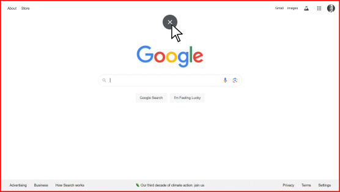

This tutorial is aimed at Google Chrome Users.
If You are Not a Google Chrome User you may Download and Install the
You have three Options to Toggle your PC
Google Chrome Browser Here:
from Regular Screen view to Full Screen view and back again.
If your keyboard has both an Fn and an F11 Key, press and hold down the Fn key while you tap on
the F11 key. If your PC Screen did not go to a Full Screen View then go to Option 2 below.
To return to the Regular Screen View press and hold down the Fn Key while you tap on the F11 Key
again. These two Keys work together to toggle the Full Screen View on and off.
Another way to go back to the Regular Screen View is by clicking
on theEsc Key, although, that does
not work on all PCs, but you can try it to see if it works on yours.
A final way to return to Regular Screen View is through the use of the "Drop-Down Circle with an X".
When you are in Full Screen View, if you place you mouse cursor up to the top edge of your screen a dark
circle with a white X will drop down. Select this and you will return to the Regular Screen View.
 Remember: the Fn + F11 key combination is a toggle switch to turn the Full Screen View on and off.
Remember: the Fn + F11 key combination is a toggle switch to turn the Full Screen View on and off.
OPTION 2 - Use Browser Settings
Open your Google Chrome browser.
Use the three dots in the upper right-hand corner to open a drop-down menu.
To go to Full Screen view, move your Mouse Cursor down the menu and Click on this Symbol

To return to the Regular Screen view move your mouse cursor up to the Top Edge of you PC's screen until
you see this Symbol drop down from the top. Click on it to return to the Regular Screen View.

OPTION 3 - Use The Web Page "Go Fullscreen" Button
At the top of each Web Page there is a "Go Fullscreen" Button such as this:
When you click on it you will go to the Full Screen view and the button will change to "Exit Fullscreen" Button
such as this:
When you click on it you will return to Regular Screen view and the button will change to "Go Fullscreen".
Caution: Options 1 & 2 will keep your screen view the same as you go from web page to web page until
you physically change it. Option 3, will not do this. Instead, as you go from one web page to another, your
browser will always revert back to the Regular Screen view.